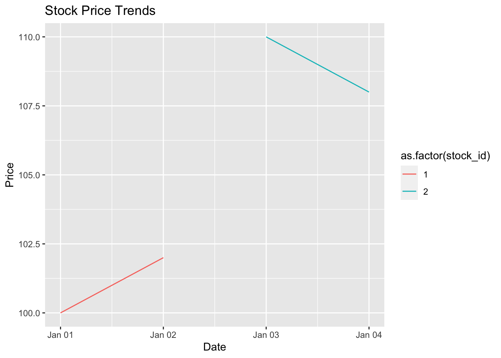

Appendix A — Toolkit for advanced financial data analytics
Author
Barry Quinn
A.1 Programming for Financial Data Science
Financial data science involves the application of statistical and machine learning techniques to financial data, aiming to extract insights, make predictions, and guide decision-making. This chapter focuses on the programming aspects of financial data science, primarily using R in the Posit IDE.
A.2 Introduction to R
R is a powerful language for statistical computing and graphics, widely used in financial data analysis for its robust package ecosystem and flexibility.
A.2.1 Key Features of R
Statistical Analysis: R provides extensive statistical modeling capabilities.
Data Handling: R excels in handling and manipulating financial datasets.
Graphical Capabilities: It offers strong tools for data visualization.
A.2.2 R Code Example: Basic Data Manipulation
# Install and load the dplyr packagelibrary(dplyr)
Attaching package: 'dplyr'
The following objects are masked from 'package:stats':
filter, lag
The following objects are masked from 'package:base':
intersect, setdiff, setequal, union
Machine Learning: Apply machine learning techniques for prediction.
A.4.4 Reporting and Communication
R Markdown: Create dynamic reports combining code, output, and narrative.
Interactive Dashboards: Develop dashboards using packages like shiny.
A.4.5 R Code Example: Linear Regression
# Example: Simple linear regressionmodel <-lm(stock_price ~ stock_id, data = data)summary(model)
Call:
lm(formula = stock_price ~ stock_id, data = data)
Residuals:
1 2 3 4
-16 28 -8 -4
Coefficients:
Estimate Std. Error t value Pr(>|t|)
(Intercept) 110.00 28.98 3.795 0.0629 .
stock_id 6.00 10.58 0.567 0.6279
---
Signif. codes: 0 '***' 0.001 '**' 0.01 '*' 0.05 '.' 0.1 ' ' 1
Residual standard error: 23.66 on 2 degrees of freedom
Multiple R-squared: 0.1385, Adjusted R-squared: -0.2923
F-statistic: 0.3214 on 1 and 2 DF, p-value: 0.6279
A.5 Conclusion
Programming in R within the Posit IDE provides a robust framework for financial data science. The combination of R’s statistical capabilities and Posit’s integrated environment enables efficient data analysis and insightful reporting in the financial domain.
This chapter provides a foundational overview of using R for financial data science in the Posit IDE. The code examples are basic and intended to illustrate the concepts discussed. Depending on the audience’s proficiency and the book’s scope, you may include more complex examples and in-depth explanations of financial modeling and data analysis techniques.
B Reproducible Data Analysis in Financial Data Science
Reproducibility is a cornerstone of scientific research, ensuring that results can be independently verified and trusted. In financial data science, reproducibility is critical for validating results and maintaining integrity in analysis and decision-making processes.
B.1 What is Reproducibility?
Reproducibility in data science means that others can use the same data and methods to achieve the same results. It involves a combination of well-documented code, data, and methodologies.
B.1.1 Importance in Financial Analysis
Trustworthiness: Reproducible analysis builds confidence in the findings.
Verification: Allows for independent verification of results.
Collaboration: Facilitates sharing and collaboration among teams.
B.2 Achieving Reproducibility
Achieving reproducibility requires careful planning and execution throughout the data analysis process.
B.2.1 Data Management
Accessible Data: Ensure data used for analysis is accessible and properly documented.
Data Versioning: Track changes in data, especially in dynamic datasets.
B.2.2 Code Documentation and Management
Commenting Code: Write clear comments explaining the purpose and functionality of code segments.
Modular Coding: Break code into reusable functions and modules for better clarity and reusability.
B.2.3 R Code Example: Commenting and Modular Coding
# Function to calculate the average stock pricecalculate_average_price <-function(prices) {# prices: Vector of stock pricesreturn(mean(prices, na.rm =TRUE))}# Example usageaverage_price <-calculate_average_price(data$stock_price)
B.2.4 Tools for Reproducibility
Quarto (Formerly R Markdown): Combines code, output, and narrative in a single document.
Version Control (Git/GitHub): Track changes in code and collaborate effectively.
B.2.5 Quarto Example: Documenting Analysis
Create a Quarto document (.qmd file) documenting an analysis. The document includes narrative, code, and outputs together.
---
title: "Financial Data Analysis"
format: html
---
## Analysis of Stock Prices
This section analyzes the trend in stock prices.
r
# Plotting stock prices
ggplot(data, aes(x = stock_id, y = stock_price)) +
geom_line()
B.3 Reproducibility Checklist
A reproducibility checklist can help ensure that all critical aspects of reproducible research are covered:
Code Execution: Can the code run from start to finish without errors?
Results Verification: Do the results match with reported findings?
Documentation: Is there clear documentation for data sources, code, and methodologies?
Dependencies: Are all software dependencies and packages listed and versioned?
B.4 Long-term Reproducibility
Considering the future usability of the analysis is vital:
Code Maintenance: Regular updates and maintenance of the codebase.
Extensibility: Designing analysis workflows that can be easily extended or modified.
B.5 Conclusion
In financial data science, reproducibility is not just a good practice but a necessity. It ensures that analyses are trustworthy and verifiable, which is paramount in a field where decisions can have significant financial implications. By adhering to best practices in data management, coding, and documentation, financial data analysts can achieve a high standard of reproducibility in their work.
Continuing with the detailed markdown content for Section 3, “The Tidyverse: An Ecosystem for Data Science,” we’ll explore the components of the Tidyverse and their application in financial data science. This section will be formatted for a Quarto book and will include examples in R.
C The Tidyverse: An Ecosystem for Data Science
The Tidyverse is a collection of R packages designed for data science that share an underlying design philosophy, focusing on usability and ease of comprehension. It is particularly effective in the context of financial data analytics for its coherent syntax and powerful data manipulation capabilities.
C.1 Introduction to the Tidyverse
The Tidyverse packages offer a wide range of functionalities that streamline data import, cleaning, manipulation, visualization, and modeling.
C.1.1 Core Components
ggplot2: For data visualization.
dplyr: For data manipulation.
tidyr: For tidying data.
readr: For reading in data.
C.1.2 R Code Example: Data Manipulation with dplyr
# Load the dplyr packagelibrary(dplyr)# Example: Filtering and summarizing stock datastock_data <-data.frame(date =as.Date(c('2021-01-01', '2021-01-02', '2021-01-03', '2021-01-04')),stock_id =c(1, 1, 2, 2),price =c(100, 102, 110, 108))# Using dplyr to filter and summarizefiltered_data <- stock_data %>%filter(stock_id ==1) %>%summarize(average_price =mean(price))
C.2 Data Visualization with ggplot2
Visualization is a key aspect of financial data analysis. ggplot2 provides a powerful system for declaratively creating graphics based on The Grammar of Graphics.
C.2.1 R Code Example: Creating a Plot with ggplot2
# Load the ggplot2 packagelibrary(ggplot2)# Example: Plotting stock price trendsggplot(stock_data, aes(x = date, y = price, color =as.factor(stock_id))) +geom_line() +labs(title ="Stock Price Trends", x ="Date", y ="Price")

C.3 Data Wrangling with tidyr
In financial datasets, data often comes in formats that are not suitable for direct analysis. tidyr provides tools for reshaping and tidying data into a more analyzable form.
C.3.1 R Code Example: Tidying Data with tidyr
# Load the tidyr packagelibrary(tidyr)# Example: Converting wide format to long formatwide_data <-data.frame(date =as.Date('2021-01-01'),stock_1_price =100,stock_2_price =110)long_data <- wide_data %>%pivot_longer(cols =starts_with("stock"), names_to ="stock_id", values_to ="price")
C.4 Conclusion
The Tidyverse offers a coherent, fluent, and expressive syntax for data analysis in R, making it an indispensable part of the financial data scientist’s toolkit. Its components work seamlessly together, enabling efficient and elegant data analysis workflows, crucial for insightful financial analysis.
This section provides an overview of the Tidyverse and its application in financial data science, including key packages and their functionalities. The R code examples illustrate how these packages can be used in practical financial data analysis scenarios. This content can be further elaborated upon or tailored to suit specific use cases or audience needs.